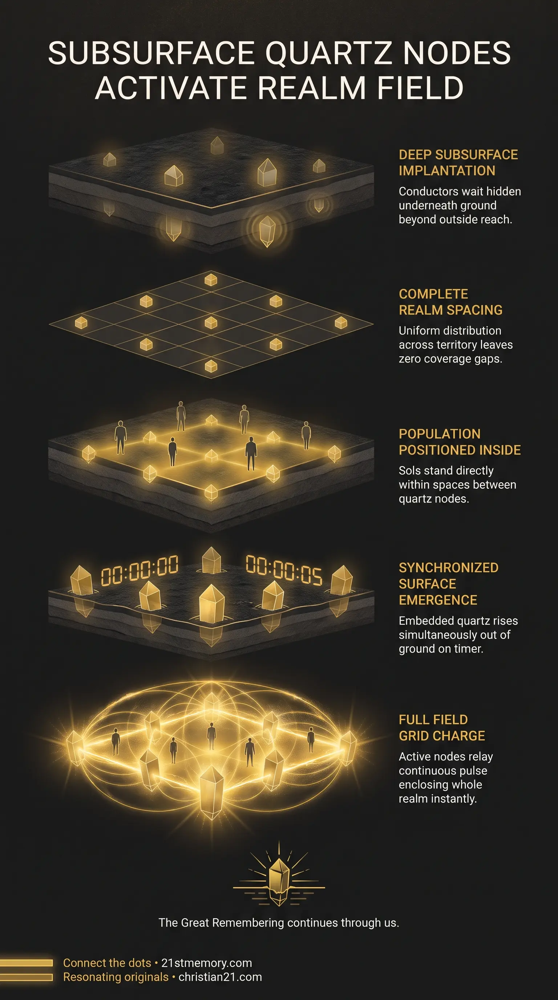

Ground Placement
Ground Placement — Where the quartz conductors sit under the third realm, spaced so the grid covers everyone standing in it.

Watch this series on YouTube — every video dubbed into 20 languages. Tap the settings gear on any video, then Audio track, to hear it in yours.
Ground Placement — Where the quartz conductors sit under the third realm, spaced so the grid covers everyone standing in it.

The Dormant Quartz Grid Beneath Our Feet — Crystals embedded from under the ground, waiting on a timer to rise together as the nodes of the grid.
Ground Placement is where the conductors sit — and where they sit decides everything that follows. The quartz crystals of the ascension process were implanted and embedded from under the ground, spaced out around the whole third realm, positioned so that the people of the realm stand in between them. The placement has three parts, and each one is load-bearing. The position: deep under the earth, hidden for the entire waiting period. The distribution: spaced around the entire planet, with no gap in the pattern. And the emergence the placement makes possible: on their timer the crystals come out of the ground, everywhere at once, and stand in the open as the nodes of the grid. The portal cannot open until these crystals come out of the ground — so the awakening does not begin with a signal from the sky. It begins with where the hardware was put.
The grid exists in the placement before it ever fires. Spaced out around the third realm, the crystals are already arranged as the network they will become: positions first, field second. When the charge comes, nothing has to be moved or aimed — the pattern was settled when the crystals were put in, and the grid simply lights up along lines the placement drew in advance. The people stand inside the pattern. The image Thalon gives is millions of sols in between the crystals, all around the world — the population is not underneath the grid or outside it, but woven through it, each person standing in the spaces the spacing leaves. That is why the field misses no one. No sol escapes is not a force applied at the end; it is a fact of placement, true from the moment the last crystal went in. The ground is both the hiding place and the launch point. Embedded from under the earth, the conductors spend the whole waiting period out of sight and out of reach, underneath a world that never sees them. And because they sit in the earth, they can come out of it. The rise is not something added to the placement afterward — it is built into where they were put.
The crystals were placed just before the Great Awakening, implanted and embedded from under the ground. The jump that put them there belongs to the implanting itself; what Ground Placement owns is the result: a finished set of devices underneath the realm, dormant on their timer, announced by nothing above the surface. The depth is the protection. The parasite order dismantles conductors wherever it finds them — it has spent ages stripping them out of the realm's true architecture — but this set was placed past its reach, under the earth itself, in a moment it could not get to. There they wait, undisturbed, for the timer.
The deployment's geometry is stated in three words: spaced out around the third realm. The crystals are distributed across the whole terrestrial plane, placed around the planet, so the coverage is the coverage of the realm itself. Spacing is what turns a set of crystals into a system. A cluster, however powerful, would make a local field; the spacing makes a planetary one. There are no gaps in the pattern, because a gap would be a place the grid does not reach — and the process is built to reach everywhere.
Each placed crystal stands as a node, and the nodes are not arranged around empty ground. The sols of the realm stand between them — in Thalon's words, "imagine millions of you in between all of this all around the world." When the crystals charge and begin relaying the pulse from node to node, the grid forms around the people, through the very spaces they are standing in. The field does not descend on the population from above or arrive from somewhere else. It closes around everyone in place, which is why its coverage is total: the pattern was drawn with everyone already inside it.
On the timer, the placement completes itself. The crystals appear — in Thalon's words, "they will appear boom out of the earth. It will be quite mad." The rise is synchronized across the whole realm, because the grid only works whole: a partial set rising piece by piece would form a partial field, and the process needs the full network standing in the open at once. The emergence is the most visible moment of the entire process, and it is a placement event — the earth giving up what was put into it, all at the same time. Until it happens, nothing downstream can happen. The portal cannot open until these crystals come out of the ground.
The conductors work at ground level because that is where the field has to form. The operational devices above the sun belong to the portal operation; the crystals' work is here, at the level where the sols stand, the pulse filling across the whole realm from node to node through the ground the realm is made of. Placed in orbit or held above the surface, the set would hang over the population instead of standing among it. In the ground, the crystals are anchored in the earth of the realm itself, hidden by it for as long as hiding is needed, and risen out of it at the one moment rising is required. The ground is not where the crystals happen to be stored. It is the position the whole geometry depends on.
Ground Placement is the positional third of one deployment. The devices themselves are the Implanted Conductors; the reason the deployment was aimed at the future is Time Travel Preparation; Ground Placement is where each crystal sits and what that arrangement makes possible. The same conductive principle once ran through the realm's true architecture, where conductors were placed through stone, crystal, granite and copper so whole buildings carried sound and light currents — placement as a way of wiring a world for frequency. The implanted set is that principle at planetary scale and in the earth itself. Spacing is the process's recurring geometry: conductors spaced around the realm for the grid, and afterward the healing sanctuaries spaced out on different continents for the ones who stay — in both cases the arrangement is settled in advance so that, when the moment comes, everyone is already somewhere the help reaches.
Because the placement is total, the outcome does not depend on where anyone happens to be standing when the moment arrives. Every position in the realm was filled beforehand. The transition reaches each sol not because it searches for them, but because it was built around them.
Of all the conductor networks in the realm's history, the implanted set is the one the other side never got to touch — placed from underneath, in a moment behind them, under the full depth of the earth. The placement is a large part of why the deployment reads as a process rather than a plan: there was never a surface installation to find, guard or sabotage.
When the timer completes, the first unmistakable sign of the awakening is the ground itself opening its pattern — crystals standing in the open, everywhere at once, in the positions they were given. Everything after that moment runs on the geometry this placement laid down.
This topic is free to share. Support the archive →